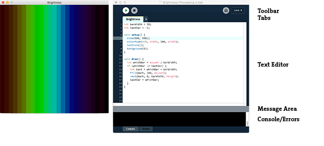

Overview
Processing Development Environment (PDE)
Preferences
Sketches and Sketchbook
Renderers
Coordinates
Tabs, Multiple Files, and Classes
Programming Modes
Adding Libraries, Tools, and Modes
Export
The Processing Development Environment (PDE) makes it easy to write Processing programs. Programs are written in the Text Editor and started by pressing the Run button. In Processing, a computer program is called a sketch. Sketches are stored in the Sketchbook, which is a folder on your computer. It's easy to open the sketches by clicking on the Open button.
Sketches can draw two- and three-dimensional graphics. The default renderer is for drawing two-dimensional graphics. The P3D renderer makes it possible to draw three-dimensional graphics, which includes controlling the camera, lighting, and materials. The P2D renderer is a fast, but last accurate renderer for drawing two-dimensional graphics. Both the P2D and P3D renderers are accelerated if your computer has an OpenGL compatible graphics card.
The capabilities of Processing are extended with Libraries and Tools. Libraries make it possible for sketches to do things beyond the core Processing code. There are hundred of libraries contributed by the Processing community that can be added to your sketches to enable new things like playing sounds, doing computer vision, and working with advanced 3D geometry. Tools extend the PDE to help make creating sketches easier by providing interfaces for tasks like selecting colors.
Processing has different programming modes to make it possible to deploy sketches on different platforms and program in different ways. The current default programming modes are Java and Experimental. Other programming modes, such as JavaScript and Android, are added by selecting "Add Mode..." from the menu in the upper-right corner of the PDE.
The Processing Development Environment (PDE) consists of a simple text editor for writing code, a message area, a text console, tabs for managing files, a toolbar with buttons for common actions, and a series of menus. The menus options change from mode to mode. The default Java mode is documented here.

Programs written using Processing are called sketches. These sketches are written in the text editor. It has features for cutting/pasting and for searching/replacing text. The message area gives feedback while saving and exporting and also displays errors. The console displays text output by Processing sketches including complete error messages and text output from sketches with the print() and println() functions.
The buttons on the toolbar can run and stop programs, create a new sketch, open, save, and export:
| Run Runs the sketch. In Java mode, it compiles the code and opens a new display window. |
||
| Stop Terminates a running sketch. |
||
| New Creates a new sketch (project) in the current window. To create a new sketch in its own window, use File → New. |
||
| Open Provides a menu with options to open files from anywhere on your computer (Open...), from the Example Menu (Examples...), or one of the programs in the Sketchbook. Opening a sketch from the toolbar will replace the sketch in the current window. To open a sketch in a new window, use File → Open. |
||
| Save Saves the current sketch to its current location. If you want to give the sketch a different name, select “Save As” from the File menu. |
||
| Export In Java mode, it exports the current sketch as a Java application and the folder containing the files is opened. (Note: Exporting a sketch will delete the previous contents of the export folder, unless this preference is unchecked in the Preferences.) |
Additional commands are found within the five menus: File, Edit, Sketch, Tools, Help. The menus are context sensitive which means only those items relevant to the work currently being carried out are available.
The Processing Development Environment (PDE) is highly configurable. The most common preferences can be modified in the Preferences window, located in the File menu on Windows and Linux and in the Processing menu on Mac Os X. The full list of preferences are stored in the "preferences.txt" file. This file can be opened and edited directly only when Processing is not running. You can find the location of this file on your computer by reading the bottom-left corner of the Prefereces window.
All Processing projects are called sketches. Each sketch has its own folder. The main file for each sketch has the same name as the folder and is found inside. For example, if the sketch is named "Sketch_123", the folder for the sketch will be called "Sketch_123" and the main file will be called "Sketch_123.pde". The PDE file extension is an acronym for the Processing Development Environment.
Processing sketches can be stored anywhere on your computer, but by default they are stored in the sketchbook, which will be in different places on your computer or network depending if you use PC, Mac, or Linux and how the preferences are set. To locate this folder, select the "Preferences" option from the File menu (or from the "Processing" menu on the Mac) and look for the "Sketchbook location".
A sketch folder sometimes contains other folders for media files and other code. When a font or image is added to a sketch by selecting "Add File..." from the Sketch menu, a "data" folder is created. Files may also be added to your Processing sketch by dragging them into the text editor. Image and sound files dragged into the application window will automatically be added to the current sketch's "data" folder. All images, fonts, sounds, and other data files loaded in the sketch must be in this folder.
Processing has three built-in renderers. The default renderer is for drawing two-dimensional shapes. P2D is a faster, but less accurate renderer for drawing two-dimensional shapes. P3D is for three-dimensional geometry, it can also control the camera, lighting, and materials. The P2D and P3D renderers are accelerated if your computer has an OpenGL compatible graphics card.
The renderer used for each sketch is specified through the size() function. If a renderer is not explicity defined in size(), it uses the default renderer. For example, the following program:
void setup() {
size(200, 200);
}
void draw() {
background(204);
line(width/2, height/2, mouseX, mouseY);
}
To change the renderer, add a third parameter to size(). For example:
void setup() {
size(200, 200, P2D);
}
void draw() {
background(204);
line(width/2, height/2, mouseX, mouseY);
}
A large effort has been made to make the Processing renderers behave similarly across the different renderers, but there are currently some inconsistencies that are explained in the reference.
For more information, see the size() reference entry.
Processing uses a Cartesian coordinate system with the origin in the upper-left corner. If your sketch is 320 pixels wide and 240 pixels high, coordinate (0, 0) is the upper-left pixel and coordinate (320, 240) is in the lower-right. The last visible pixel in the lower-right corner of the screen is at position (319, 239) because pixels are drawn to the right and below the coordinate.

Using the three-dimension coordinate system of P3D, the z-coordinate is zero at the surface of the image, with negative z-values moving back in space. When drawing in 3D, the camera is positioned in the center of the screen.
It can be inconvenient to write a long program within a single file. When Processing sketches grow to hundreds or thousands of lines, breaking them into modular units helps manage the different parts. Processing manages files with the Sketchbook and each sketch can have multiple files that are managed with tabs.
The arrow button to the right of the tabs in the Processing Development Environment is used to manage these files. Click this button to reveal options to create a new tab, rename the current tab, and delete the current tab. If a project has more than one tab, they can also be hidden and revealed. Hiding a tab temporarily removes that code from the sketch (it will not be compiled with the sketch when you press Run).
Tabs are intended for more advanced users, and for this reason, the menu that controls the tabs is intentionally made less prominent.
|
Advanced When a program with multiple tabs is run, the code is grouped together and the classes in other tabs become inner classes. Because they're inner classes, they cannot have static variables. Simply place the "static" variable outside the class itself to do the same thing (it need not be explicitly named "static" once you list it in this manner). If you don't want code to be an inner class, you can also create a tab with a .java suffix, which means it will be interpreted as straight java code. It is also not possible to use static classes in separate tabs. If you do this, however, you'll need to pass the PApplet object to that object in that tab in order to get PApplet functions like line(), loadStrings() or saveFrame() to work. |
Processing has different programming modes to make it possible to deploy sketches on different platforms and program in different ways. The current default programming modes are Java and Experimental. Other programming modes, such as JavaScript and Android, are added by selecting "Add Mode..." from the menu in the upper-right corner of the PDE.
This mode makes it possible to write short programs to draw to the screen, but also enables complex Java programs as well. It's can be used simply by beginners, but it scales to professional Java software development. Sketches written in this mode can be exported as Java Applications to run on Linux, Mac OS X, and Windows operating systems.
|
Advanced Java files with the extension .java can be included with a Java mode sketch. They may be created directly in the PDE or copied into the sketch folder through the "Add File..." item in the Sketch menu or dragged into the text editor. It's possible to write any Java code in files with the .java extension. In fact, complete Java code can be written from inside the Processing Environment by subclassing PApplet like this:
public class MyDemo extends PApplet {
This is for advanced developers only and is not really recommended. Using this technique
means that any additional tabs will no longer be inner classes, meaning you'll have to
do extra work to make them communicate properly with the host PApplet. It is not necessary
to use this technique just to get features of the Java language. Advanced developers can
also program with Processing in another Java Editor if higher-level code editing and
tools are needed. We've documented how to use
Processing
in Eclipse, but core.jar can be used as a part of any Java project.
|
Sketches written in this mode can be exported to run inside web browsers using HTML5 and WebGL. This mode is documented on the JavaScript page of the Processing Wiki.
Sketches written in this mode can be exported to run on Android phones and tablets. This mode is documented on the Processing for Android page of the Processing Wiki.
Processing 2.0 includes a set of new features to make it easier to install, update, and remove Libraries, Tools, and Modes.
Add contributed libraries by selecting "Add Library..." from the "Import Library..." submenu within the Sketch menu. Not all available libraries have been converted to show up in "Add Library...". If a library isn't there, it will need to be installed manually. Follow the How to Install a Contributed Library instructions on the Processing Wiki for more information.
Add contributed tools by selecting "Add Tool..." from the Tools menu to select a Tool to download.
Add contributed modes by selecting "Add Mode..." from the Mode menu in the upper-right corner of the PDE.
The Export information and Tips page on the Processing Wiki covers the details of exporting Applications from Java mode.
Exporting from JavaScript mode is discussed on the JavaScript page of the Processing Wiki.
Exporting from Android mode is discussed on the Android page of the Processing Wiki.